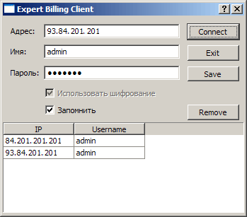
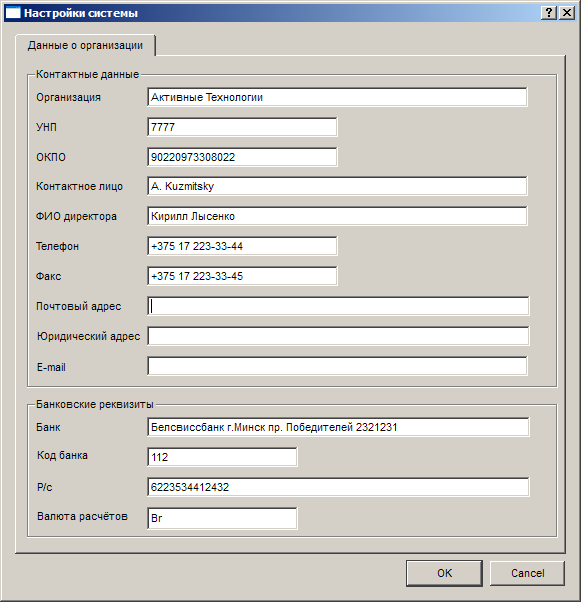

|
Начало работы |
Top Previous Next |
|
При запуске Expert Billing Admin открывается окно подключения к серверу:

Здесь необходимо ввести IP-адрес сервера биллинга (поле Адрес), имя пользователя для работы с Expert Billing Admin и пароль (поля Имя и Пароль). Если установлен флажок Запомнить, то при следующем запуске программы введенные данные сохранятся.
Кроме того, нажав на кнопку Save, вы сможете записать нынешнюю конфигурацию в список, чтобы в дальнейшем выбирать ее (IP-адрес сервера, имя и пароль) одним щелчком мыши. Это удобно в случае администрирования нескольких биллинг-серверов с помощью Expert Billing Admin с одного компьютера. Кнопка Remove служит для удаления конфигурации из списка.
Если введенные данные корректны, то после нажатия кнопки Connect произойдет соединение с сервером и откроется главное окно интерфейса Expert Billing Admin. Если этого не произошло, откроется всплывающее окно с сообщением об ошибке: «Невозможно подключиться к серверу». Ошибка может произойти по одной из нескольких причин:
Для разрешения проблем смотрите содержание файла rpc_log на сервере, в директории /opt/ebs/data/log/ биллинг-системы.
Настоятельно рекомендуем перед началом работы с биллингом заполнить информацию о вашей организации. Для этого зайдите в меню Help->About Operator. Введённые данные будут в дальнейшем использованы при печати документов (чеки, счета и др.).  Окно информации о провайдере
This help file was created with an unregistered evaluation copy of Help & Manual. © EC Software. All rights reserved. This message will not appear if you compile this help file with the registered version of Help & Manual. |